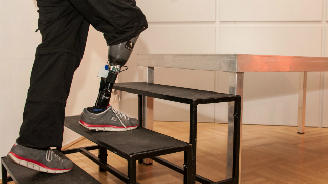

</head>
<body>
    <main>
        <section>
            <div class="container-fluid">
                <div id="carouselExampleFade" class="carousel slide carousel-fade">
                    <div class="carousel-inner flex">
                        <div class="carousel-item active">
                            
                        </div>
                        <div class="carousel-item">
                            
                        </div>
                        <div class="carousel-item">
                            
                        </div>
                        <div class="carousel-item">
                            
                        </div>
                        <div class="carousel-item">
                            
                        </div>
                    </div>
                    <button class="carousel-control-prev" type="button" data-bs-target="#carouselExampleFade" data-bs-slide="prev">

                    </button>
                </div>


            </section>        
    </main>
</body>